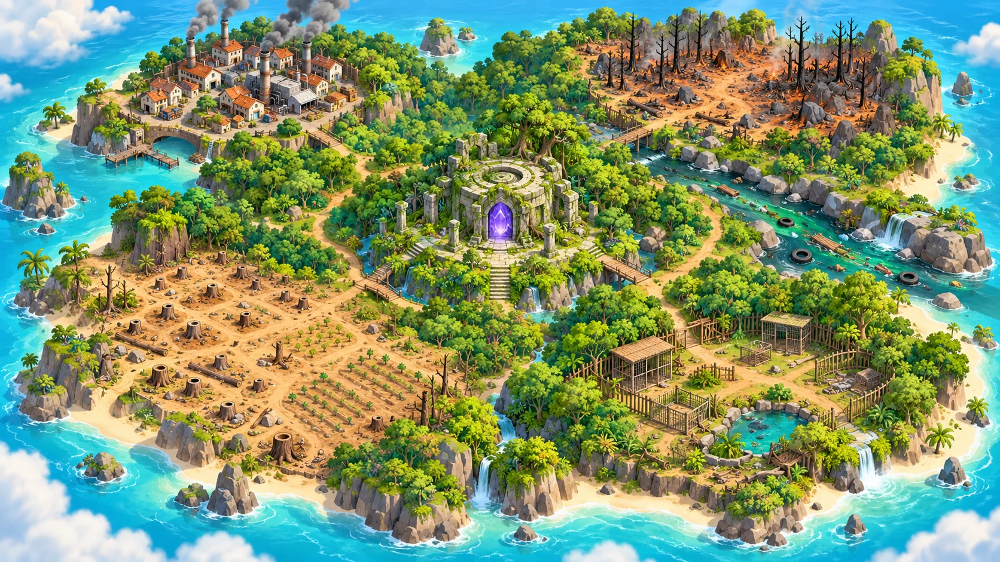

UMA JORNADA PELA VIDA
Ilha dos Guardiões
Floresta em Chamas0 / 5 fragmentos

VOCÊ ESTÁ AQUI
Arraste para explorar a ilha. Toque em um destino.
SEU CAMINHO
Cada cuidado transforma uma região.
Escolha uma missão para conhecer seu aliado e sua recompensa.
Cinco regiões para cuidar. O encontro final será a próxima aventura.
Seis regiões conectadas por trilhas. O retrato de Kai indica a fase atual. As regiões recuperadas ganham vegetação, água limpa e vida. A restauração aparece depois que você conclui a missão.